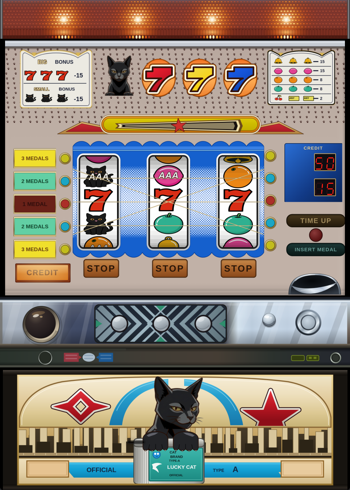
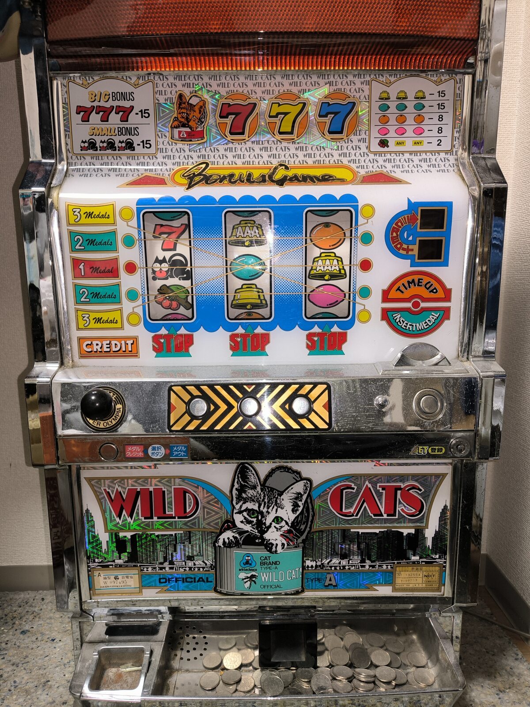

第一弾 · ワイルドキャッツ
レトロパチスロ
エミュレーター
実機から吸い出したプログラムROMを使い、1991年のパチスロ3号機「ワイルドキャッツ」をPC上で動かします。ゲームの進行やリール・ランプの動作は、基本的に実機と同じです。

AIで制作したアートワーク
エミュレーターの筐体アートワークは、AIを使ってこのプロジェクト用に制作しました。部品の配置は実機を参考にしていますが、イラストや文字、図柄は実機の印刷物をそのまま使っていません。

遊ぶには
- Windows版の配布ページからZIPをダウンロードして展開します。Linuxではソースからビルドできます。
- ご自身が所有する実機の基板から吸い出したプログラムROMを、説明に従って配置します。
- エミュレーターを起動し、ワイルドキャッツを選びます。
ROMは同梱していません。プレイには、ご自身が所有する実機の基板から吸い出したROMが必要です。ROMの提供・共有は行っていません。